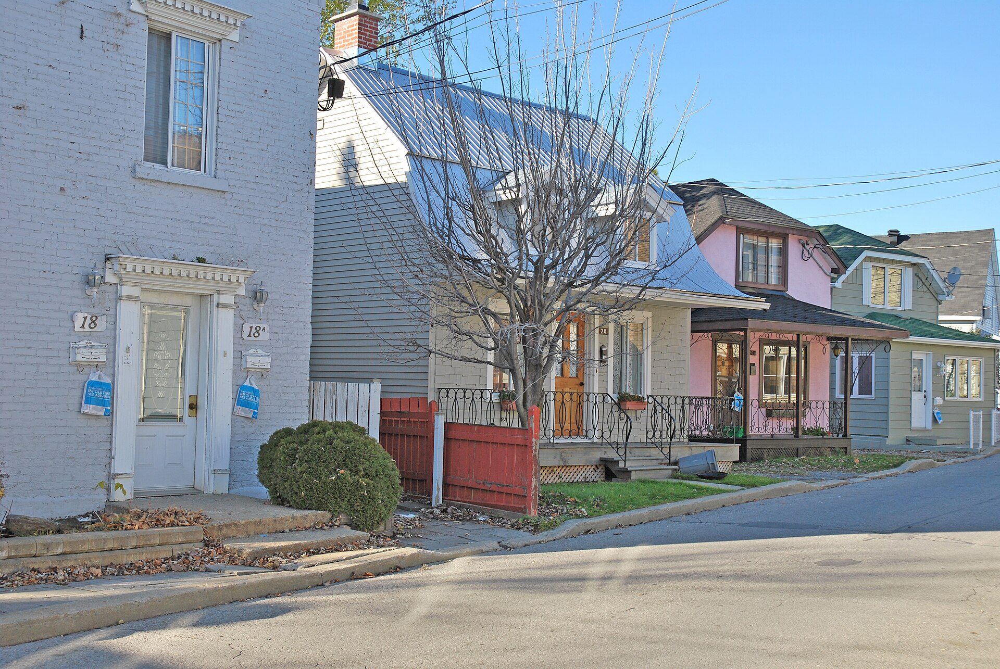

Traditional Québec house of the village core La maison de tradition québécoise du noyau villageois

« Noyau villageois de Pointe-Claire », photo Anne-Marie Dufour, 2010-11-25, Flickr stream *Parcours riverain — Ville de Montréal*; Wikimedia Commons, CC BY 2.0, Flickr licence review passed (verified through the Commons API).

« Noyau villageois de Sainte-Anne-de-Bellevue », photo Anne-Marie Dufour, 2010-11-10, Flickr stream *Parcours riverain — Ville de Montréal*; Wikimedia Commons, CC BY 2.0, Flickr licence review passed (verified through the Commons API).
The ordinary house of the two West Island village cores — modest, one and a half to two storeys, rectangular, under a steep two-slope roof with dormers, standing close to a narrow street, in clapboard at Sainte-Anne and roughcast at Pointe-Claire. Both places advertise a heritage village. Between them they have three protected buildings and no protected ensemble. One record, two municipalities: the photograph on this card is a Sainte-Anne street, and Pointe-Claire's stands beside it on the type page.
Pointe-Claire's parish dates from 1698 and Sainte-Anne's core grew around a mission that took its present name in 1714, and both produced a small village around the church rather than a string of farms along a côte. A plan of 1767 already shows Pointe-Claire's clustered on the three avenues it still occupies; by the nineteenth century it held hotels, artisans' workshops and shops serving the surrounding farms and the first summer people on the lake shore. Most of what stands there now is younger than that, because a fire in 1900 took a good part of it — the cahier says so plainly, and then argues that the value survived the fire anyway, in the width of the streets and the height of the houses. Sainte-Anne's core sits at the point of the island between the canal locks of 1843 and the railway bridges, and the 2005 cahier separates it into two things worth naming - the îlot villageois round the church, of two-storey clapboard houses built close to the street, and the workers' cottages of rue Saint-Jean-Baptiste, steep-roofed and dormered and low-floored, which it calls the most characteristic thing in the town's architectural heritage. One classed house, built between 1790 and 1810 for the fur trader Peter Grant and bought by Simon Fraser in 1820, shows the whole arc in a single building: a French-tradition rubble carré under a steep roof, then a bell-cast eave and two rows of ornamented dormers added as taste changed, then two flats in 1892, then a bank counter from 1906 to 1954, then a restoration in 1962 that kept the evidence of all of it.
| Tenure / plan | single-family |
|---|---|
| Storeys | 1.5 |
| Roof form | gabled |
| Roof pitch | – |
| Window proportion | – |
| Principal cladding | roughcast, fieldstone, wood-clapboard |
| Roofing | cedar shingle on the classed Sainte-Anne house; sheet metal and asphalt shingle on the surviving village fabric |
| Garage | none |
| Lot width | – |
| Front setback | – |
| Side setback | – |
| Front yard green | – |
What Ville de Montréal says about this type
- « Niché à la pointe de l'île près du canal, le village se regroupe autour de l'église, de l'ancien couvent et du presbytère. La qualité des bâtiments institutionnels, le lotissement et la forme des lots, l'échelle modeste des constructions résidentielles et la proximité du canal donnent au lieu un cachet exceptionnel. Les maisons sont généralement recouvertes de clin, comptent deux étages et sont construites près de la rue. » (1.E.9, l'îlot villageois)
- « Ces maisons ouvrières regroupées le long de rues étroites et construites avec un faible recul de la rue forment un ensemble de cottages tout à fait caractéristique du patrimoine architectural de Sainte-Anne-de-Bellevue. Les toits en pente abrupte, la présence de lucarnes, les dimensions généralement modestes des bâtiments et la faible élévation des rez-de-chaussée contribuent à l'effet d'ensemble. » (1.E.10, la rue Saint-Jean-Baptiste)
- « Englobant les habitations ouvrières, cette partie du village est un accompagnement fondamental de « la rue Saint-Jean-Baptiste ». Reprenant les typologies et la forme des îlots, mais sans en avoir la cohésion, cet ensemble constitue un secteur intéressant. » (1.I.3, le centre urbain)
- « Il s'agit du véritable cœur historique de Pointe-Claire. Un plan de 1767 montre déjà une petite agglomération autour des avenues Sainte-Anne, Saint-Joachim et Saint-Jean-Baptiste. Au XIXe siècle, on y retrouvait hôtels, ateliers d'artisans et boutiques, tous les services pour la campagne environnante et les villégiateurs qui commencent à fréquenter les rives du lac Saint-Louis. L'incendie de 1900, qui a détruit une bonne partie du village, explique les constructions plus récentes qu'on y voit aujourd'hui. Malgré tout, l'échelle et l'atmosphère particulières des rues s'offrent comme un véritable voyage dans le temps. » (5.E.2, le village)
- « À proximité, l'ancien village de Pointe-Claire conserve son échelle humaine avec des maisons modestes alignées le long de rues étroites – un paysage urbain évocateur des modes de vie du début du siècle. » (§ 3.1)
- Both cores are small, tight and close to the water. Sainte-Anne's sits at the point of the island beside the canal, gathered round the church, the former convent and the presbytery; Pointe-Claire's stands around avenues Sainte-Anne, Saint-Joachim and Saint-Jean-Baptiste, an agglomeration already drawn on a plan of 1767.
- Houses stand close to the street, or set back only slightly, along narrow streets. Both cahiers make the lotting, the scale and the alignment — rather than any single building — the thing of value.
- The Sainte-Anne cahier is explicit that it is the combination that carries the interest, naming together the quality of the institutional buildings, the subdivision and the shape of the lots, the modest scale of the houses and the nearness of the canal.
- Modest. One and a half storeys, rectangular, under a steep two-slope roof — the cottages of Sainte-Anne's rue Saint-Jean-Baptiste and the roughcast houses of Pointe-Claire's village streets. The taller two-storey clapboard house of Sainte-Anne's îlot villageois is a neighbouring form and carries its own record on that page.
- Ground floors sit low — the Sainte-Anne cahier names « la faible élévation des rez-de-chaussée » as one of four things producing the effect of the ensemble on rue Saint-Jean-Baptiste.
- Dormers light the attic. At the classed Sainte-Anne house they run in two rows, large and small, an arrangement the RPCQ fiche singles out; on the village streets there is usually one row.
- Where the roof slope is bell-cast the eave is carried out past the wall to shelter a gallery across the front.
- Sober. On the classed house the cornice returns as a pediment on the gable walls and a neo-Gothic porch stands in front of the door, both nineteenth-century additions.
- Galleries, verandahs and turned or wrought railings across the front, added and re-added over the life of these streets.
- Regular but not academic. The classed house's front entry was moved to the right side at some point in the nineteenth century.
- Roughcast render is the norm on the Pointe-Claire village street. Clapboard runs alongside it in Sainte-Anne, where the cahier says the îlot villageois houses are « généralement recouvertes de clin ».
- Rubble stone at the two protected Sainte-Anne houses, one of them with a stone spine wall in the basement. Brick and stone on the commercial frontages of rue Sainte-Anne.
- Chimney stacks in the gable walls.
- « La maison Simon-Fraser est une demeure d'inspiration française érigée entre 1790 et 1810. La résidence en pierre de plan rectangulaire, à un étage et demi, est coiffée d'un toit aigu à deux versants légèrement retroussés percé de deux rangées de lucarnes. »
- « … son corps de logis rectangulaire en moellons, le mur de refend en pierre au sous-sol, le toit aigu à deux versants aux larmiers peu saillants couvert de bardeaux de cèdre, la charpente de la toiture avec faîtage, sous-faîtage et entrait ainsi que les cheminées dans les murs pignons »
- « … ses caractéristiques témoignant des modifications apportées aux XIXe et XXe siècles, dont la corniche formant fronton sur les murs pignons, le porche d'inspiration néogothique en façade, l'entrée latérale droite, la galerie arrière, le toit légèrement retroussé, les deux rangées de lucarnes en façade, grandes et petites, ornementées et couronnées d'un fronton à arc surbaissé »
- « Représentative à l'origine de la maison rurale d'inspiration urbaine, fréquente dans la région de Montréal et les régions avoisinantes, elle possède un solage dégagé reflétant la présence d'une cave. »
Neither place has a per-type typology document — no inventory, no thesaurus, no per-type table — so this record is built from sector paragraphs in two of the twenty-seven 2005 Ville de Montréal cahiers, checked against the two RPCQ fiches for Sainte-Anne's two protected houses. Fields left null and why: `window_proportion` — no source describes a window proportion in either core; `roof.pitch_deg` — the cahier says « toits en pente abrupte » and the RPCQ says « aigu », and neither gives a figure; `lot_width_m`, `setback_front_m`, `setback_side_m`, `front_yard_green_pct` — both cahiers insist on small setbacks and on lot shape in words (« construites près de la rue », « un faible recul de la rue », « le lotissement et la forme des lots ») and neither measures anything; `sectors` — a shared record cannot carry sector codes that exist in only one of its places, and these two number their sectors 1.E.x and 5.E.x respectively. Two fields to distrust. `storeys` is given as 1.5–2 because the sources disagree in a way that cannot be resolved - the Sainte-Anne cahier says of the village core « les maisons … comptent deux étages », its next sector describes cottages of modest dimensions with steep roofs and dormers, and the RPCQ describes the one classed house as « à un étage et demi », while that same fiche's structured data block reads « Nombre d'étages » 3 ½, contradicting its own description; the 3 ½ figure is treated here as an error in the source. `principal_cladding` puts clapboard first because that is what the Sainte-Anne cahier states and roughcast second because that is what the Pointe-Claire photograph shows; no document counts what either core is actually built of. The phase is p2 and marked provisional - the type belongs to the village of the British regime and the one classed example is dated 1790–1810, but much of what stands today is later, since Pointe-Claire's cahier says outright that the fire of 1900 destroyed a good part of the village and explains the more recent buildings. The phrase Part 11's brief attributes to the Sainte-Anne core, « une architecture villageoise représentative de la fin du 19e et du début du 20e siècle », is tourism copy from visiter.sadb.qc.ca and claims no status; it is treated here as description, not as a typology source. The Grand répertoire du patrimoine bâti de Montréal, whose zone fiche 1225 covers this core, was offline throughout and could not be read.
- Neither village core carries an ensemble instrument. Pointe-Claire's 2013 municipal citation covers the site patrimonial de la pointe — the institutional ground with the windmill, the church, the convent and the presbytery — and stops at its edge; the village street fabric next door has nothing.
- Sainte-Anne-de-Bellevue has no ensemble instrument at all. Two individual houses are protected - the maison Simon-Fraser, classed by the minister in 1962, and the maison Michel-Robillard, cited by the town in 2014. The church and the presbytery that anchor the advertised « village patrimonial » are inventoriés only, which records and does not protect.
- What both places do have is design review. Sainte-Anne's PIIA by-law 798 carries a chapter of objectives and criteria for built and archaeological heritage — an instrument that governs how a permit is judged, not one that designates a place.
Same word elsewhere
- Stone house of the French tradition (Baie-D'Urfé)
- Rural house of French inspiration (Charlesbourg (Trait-Carré))
- Québec house of neoclassical inspiration (Charlesbourg (Trait-Carré))
- Mansard house (Charlesbourg (Trait-Carré))
- Cubic house (Four Square) (Charlesbourg (Trait-Carré))
- Industrial vernacular house (Charlesbourg (Trait-Carré))
- Central-gable house (maison à pignon central) (Gatineau)
- Complex gabled-roof house (maison à toit complexe à pignon) (Gatineau)
- Mansard-roofed house with gable wall on the façade (maison à toit mansardé avec mur pignon en façade) (Gatineau)
- One-and-a-half-storey wooden matchstick house (maison allumette en bois d'un étage et demi) (Gatineau)
- Wood matchstick house of two to two and a half storeys (maison allumette en bois de deux à deux étages et demi) (Gatineau)
- Brick matchbox house, two to two and a half storeys (maison allumette en brique de deux à deux étages et demi) (Gatineau)
- Cubic house (maison cubique) (Gatineau)
- CIP executive's house (maison de cadre de la CIP) (Gatineau)
- Flat-roofed wood house (maison en bois à toit plat) (Gatineau)
- Flat-roofed brick house (maison en brique à toit plat) (Gatineau)
- L-plan house with a two-slope (gable) roof (maison avec plan en L à toit à deux versants) (Gatineau)
- English-revival stone house (Hampstead)
- Postwar detached house (Hampstead)
- House of French inspiration (Île d'Orléans)
- Traditional Québec house of neoclassical influence (Île d'Orléans)
- Second Empire style and the mansard house (Île d'Orléans)
- Boomtown house (Île d'Orléans)
- Cubic house (Four Square) (Île d'Orléans)
- Stone house of the French tradition (Lachine (borough of Montréal))
- Bourgeois brick house in the Victorian taste (Lachine (borough of Montréal))
- The maison « Gameroff » — contractor-built house of the 1950s–1970s quarters (Lachine (borough of Montréal))
- Franco-Québécois transitional house (Lévis)
- Québécois traditional house (Lévis)
- Neoclassical house (Lévis)
- Second Empire house (Lévis)
- Victorian house (Lévis)
- American vernacular house (Lévis)
- Beaux-Arts house (Lévis)
- Boomtown house (Lévis)
- Flat-roofed house (Lévis)
- Village house of Longue-Pointe (Mercier–Hochelaga-Maisonneuve (borough of Montréal))
- Company workers' house of the Hudon mill, rue Saint-Germain (Mercier–Hochelaga-Maisonneuve (borough of Montréal))
- Veterans' house, to the Wartime Housing Limited model (Mercier–Hochelaga-Maisonneuve (borough of Montréal))
- Garden City House (Town of Mount Royal)
- Faubourg House (Town of Mount Royal)
- Canadian House (Town of Mount Royal)
- New England House (Town of Mount Royal)
- Georgian House (Town of Mount Royal)
- English Manor House (Town of Mount Royal)
- Bungalow (Town of Mount Royal)
- Cottage (Town of Mount Royal)
- Split-Level (Town of Mount Royal)
- Prairie House (Town of Mount Royal)
- Semi-detached single-family house (Outremont (borough of Montréal))
- Detached single-family house (Outremont (borough of Montréal))
- Modern house on the flank (Outremont (borough of Montréal))
- Faubourg house (Le Plateau-Mont-Royal (borough of Montréal))
- Detached urban house (Le Plateau-Mont-Royal (borough of Montréal))
- Row urban house (Le Plateau-Mont-Royal (borough of Montréal))
- Stone house of the French tradition (Pointe-Claire)
- Veterans' house on the Wartime Housing Limited model, c. 1947 (Pointe-Claire)
- One-storey rural house of French inspiration (Québec City)
- Urban stone house of French inspiration (Québec City)
- Franco-Québécois transition house (Québec City)
- London-type terrace house (Québec City)
- Québécois neoclassical house (Québec City)
- Mansard-roofed house (Québec City)
- Rudimentary faubourg house (Québec City)
- Cubic house (Four Square) (Québec City)
- Flat-roofed faubourg house (Québec City)
- Neo-Queen Anne house (Québec City)
- Neo-Tudor house (Québec City)
- Arts and Crafts house (Québec City)
- Dutch Colonial Revival house (Québec City)
- Neo-Georgian house (Québec City)
- Maison shoebox (Rosemont–La Petite-Patrie (borough of Montréal))
- Detached house of the Cité-Jardin du Tricentenaire (Rosemont–La Petite-Patrie (borough of Montréal))
- Traditional French and Québécois house (Saint-Lambert)
- Mansard-roofed house of Second Empire influence (Saint-Lambert)
- Queen Anne style house (Saint-Lambert)
- Boomtown house with false mansard (Saint-Lambert)
- Boomtown house with crown (parapet or cornice) (Saint-Lambert)
- Cubic (Four Square) house (Saint-Lambert)
- House of Arts and Crafts influence (Saint-Lambert)
- The modern house (including the bungalow) (Saint-Lambert)
- Two-storey clapboard village house of the îlot villageois (Sainte-Anne-de-Bellevue)
- Traditional Québec house of the village core (Sainte-Anne-de-Bellevue)
- Garden City Press workers' house (Sainte-Anne-de-Bellevue)
- Village house (Le Sud-Ouest (Montréal))
- Boomtown house (Le Sud-Ouest (Montréal))
- Urban house (Le Sud-Ouest (Montréal))
- Apartment house (Le Sud-Ouest (Montréal))
- Town house (post-1960 project housing) (Le Sud-Ouest (Montréal))
- Veterans' house (Le Sud-Ouest (Montréal))
- Lower-town company house (Ross and Macdonald, 1918–1923) (Témiscaming)
- Upper-district company house (Somerville, 1925–1950) (Témiscaming)
- Stone house in the French tradition (Vieux-Terrebonne)
- Maison cossue of rue Saint-Louis (Vieux-Terrebonne)
- Neoclassical Québécois stone house (Vieux-Terrebonne)
- Small-gabarit vernacular village house of the Bas-de-la-Côte (Vieux-Terrebonne)
- French-regime house in stone (colonial français) (Trois-Rivières)
- Well-to-do bourgeois house in stone and brick (maison cossue) (Trois-Rivières)
- Boomtown house (Trois-Rivières)
- Cubic house (Four-square) (Trois-Rivières)
- Arts & Crafts house (Trois-Rivières)
- French-regime stone house (Ville-Marie (Montréal))
- Classical house of the British regime (Ville-Marie (Montréal))
- Greystone terrace (Ville-Marie (Montréal))
- Workers' house with carriage gate (Ville-Marie (Montréal))
- Rural or village house (Villeray–Saint-Michel–Parc-Extension)
- Boomtown house (Villeray–Saint-Michel–Parc-Extension)
- Post-war house (Villeray–Saint-Michel–Parc-Extension)
- Post-war semi-detached house (Villeray–Saint-Michel–Parc-Extension)
- Picturesque villa and country house (Westmount)
- Greystone row house (Westmount)
- Mansard-roofed house of Second Empire influence (Westmount)
- Queen Anne house (Westmount)
- Richardsonian Romanesque house (Westmount)
- Semi-detached brick house (Westmount)
- Eclectic prestige house of the summit (Westmount)
- Tudor Revival house (Westmount)
- Arts and Crafts semi-detached house (Westmount)
- Interwar apartment house (Westmount)
Same form elsewhere
- Québec house of neoclassical inspiration (Charlesbourg (Trait-Carré))
- Traditional Québec house of neoclassical influence (Île d'Orléans)
- Québécois traditional house (Lévis)
- Québécois neoclassical house (Québec City)
- Traditional French and Québécois house (Saint-Lambert)
- Traditional Québec house of the village core (Sainte-Anne-de-Bellevue)
- Neoclassical Québécois stone house (Vieux-Terrebonne)
Same period elsewhere
- Stone house of the French tradition (Baie-D'Urfé)
- Rural house of French inspiration (Charlesbourg (Trait-Carré))
- Québec house of neoclassical inspiration (Charlesbourg (Trait-Carré))
- English summer villa on the lake shore (Dorval)
- Central-gable house (maison à pignon central) (Gatineau)
- Mansard-roofed house with gable wall on the façade (maison à toit mansardé avec mur pignon en façade) (Gatineau)
- One-and-a-half-storey wooden matchstick house (maison allumette en bois d'un étage et demi) (Gatineau)
- Wood matchstick house of two to two and a half storeys (maison allumette en bois de deux à deux étages et demi) (Gatineau)
- L-plan house with a two-slope (gable) roof (maison avec plan en L à toit à deux versants) (Gatineau)
- House of French inspiration (Île d'Orléans)
- Traditional Québec house of neoclassical influence (Île d'Orléans)
- Regency cottage (Île d'Orléans)
- Second Empire style and the mansard house (Île d'Orléans)
- Victorian eclecticism (Île d'Orléans)
- Stone house of the French tradition (Lachine (borough of Montréal))
- Bourgeois brick house in the Victorian taste (Lachine (borough of Montréal))
- Brick duplex and triplex, detached or in continuous alignment (Lachine (borough of Montréal))
- Small one-storey brick house, wider than deep, with a crown (Lachine (borough of Montréal))
- French-regime house (Régime français) (Lévis)
- Franco-Québécois transitional house (Lévis)
- Québécois traditional house (Lévis)
- Regency cottage (Lévis)
- Neo-Gothic (Lévis)
- Neoclassical house (Lévis)
- Agricultural vernacular building (Lévis)
- Second Empire house (Lévis)
- Victorian house (Lévis)
- American vernacular house (Lévis)
- Mixed-use or commercial building (Lévis)
- Village house of Longue-Pointe (Mercier–Hochelaga-Maisonneuve (borough of Montréal))
- Company workers' house of the Hudon mill, rue Saint-Germain (Mercier–Hochelaga-Maisonneuve (borough of Montréal))
- Faubourg house (Le Plateau-Mont-Royal (borough of Montréal))
- Detached urban house (Le Plateau-Mont-Royal (borough of Montréal))
- One-storey rural house of French inspiration (Québec City)
- Urban stone house of French inspiration (Québec City)
- Franco-Québécois transition house (Québec City)
- London-type terrace house (Québec City)
- Palladian house (residential Palladian) (Québec City)
- Neo-Gothic house, villa or cottage (Québec City)
- Québécois neoclassical house (Québec City)
- Regency cottage (Québec City)
- Regency villa (Québec City)
- Mansard-roofed house (Québec City)
- Rudimentary faubourg house (Québec City)
- Traditional French and Québécois house (Saint-Lambert)
- Two-storey clapboard village house of the îlot villageois (Sainte-Anne-de-Bellevue)
- Traditional Québec house of the village core (Sainte-Anne-de-Bellevue)
- Garden City Press workers' house (Sainte-Anne-de-Bellevue)
- English summer villa on the lake shore (Senneville)
- Arts and Crafts country estate (Senneville)
- Village house (Le Sud-Ouest (Montréal))
- Stone house in the French tradition (Vieux-Terrebonne)
- Maison cossue of rue Saint-Louis (Vieux-Terrebonne)
- Neoclassical Québécois stone house (Vieux-Terrebonne)
- Small-gabarit vernacular village house of the Bas-de-la-Côte (Vieux-Terrebonne)
- French-regime house in stone (colonial français) (Trois-Rivières)
- Well-to-do bourgeois house in stone and brick (maison cossue) (Trois-Rivières)
- French-regime stone house (Ville-Marie (Montréal))
- Classical house of the British regime (Ville-Marie (Montréal))
- Maison-magasin and warehouse with dwellings above (Ville-Marie (Montréal))
- Freestanding greystone mansion (Ville-Marie (Montréal))
- Greystone terrace (Ville-Marie (Montréal))
- Workers' house with carriage gate (Ville-Marie (Montréal))
- Rural or village house (Villeray–Saint-Michel–Parc-Extension)
- Picturesque villa and country house (Westmount)
Same style elsewhere
- Québec house of neoclassical inspiration (Charlesbourg (Trait-Carré))
- Central-gable house (maison à pignon central) (Gatineau)
- Traditional Québec house of neoclassical influence (Île d'Orléans)
- Franco-Québécois transitional house (Lévis)
- Québécois traditional house (Lévis)
- Neoclassical house (Lévis)
- Village house of Longue-Pointe (Mercier–Hochelaga-Maisonneuve (borough of Montréal))
- Franco-Québécois transition house (Québec City)
- London-type terrace house (Québec City)
- Québécois neoclassical house (Québec City)
- Rudimentary faubourg house (Québec City)
- Traditional French and Québécois house (Saint-Lambert)
- Traditional Québec house of the village core (Sainte-Anne-de-Bellevue)
- Neoclassical Québécois stone house (Vieux-Terrebonne)
- Well-to-do bourgeois house in stone and brick (maison cossue) (Trois-Rivières)
- Classical house of the British regime (Ville-Marie (Montréal))